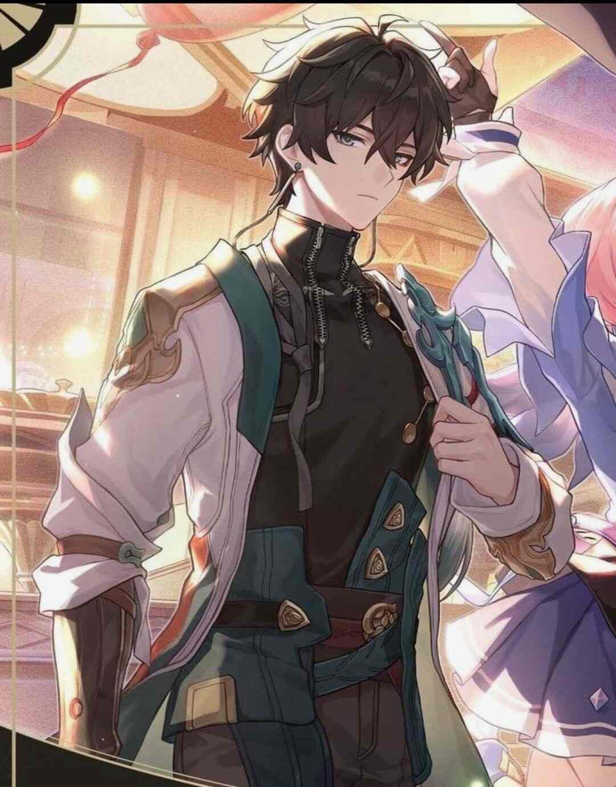
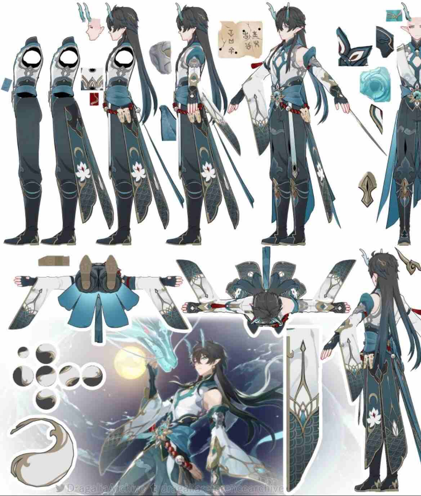
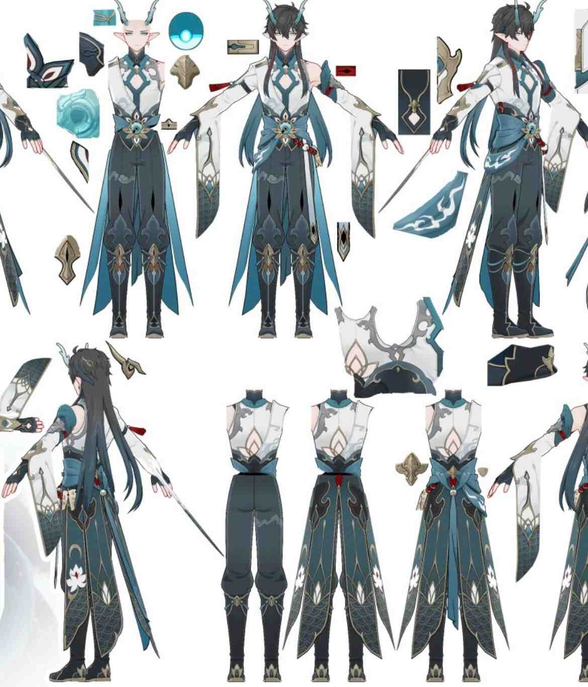
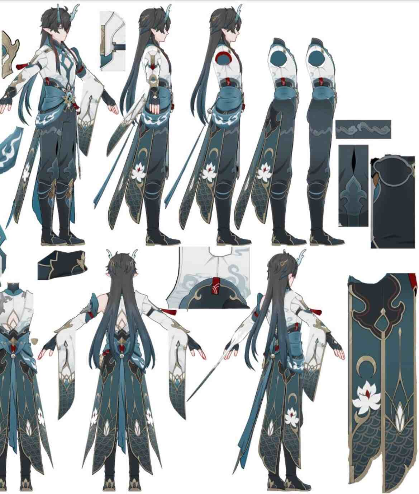

Who is this man?
Dan Heng is a (kinda) young man who is the guard and teh archivist of the Astral Express. A literal space train.
He comes off as cold, but is rather kind and caring, and fiercely loyal to his friends and fellow express crew. He comes from a group of different races under the Xianzhou Alliance, as they do not have a home planet, they instead have many fleets of ships they all live on.
Dan Heng specifically comes from the ship, Xianzhou Luofu. He is also not human, he is a "long life" species known as a Vidyadhara. Vidyadhara are a race of humanoid like dragon people. They appear human, but can have either pointed ears, glass-like horns, a tail, or colored limbs. Granted, some of them can change their appearance entirely, like Dan Heng, who prefers to appear comepletely human. Vidyadhara reincarnate, thus they do not, and are incapable of reproducing.
  This is his ingame model of his Vidyadhara form, named Dan Heng: Imbibitor Lunae.